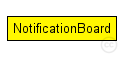

This documentation is released under the Creative Commons license
This documentation is released under the Creative Commons licenseUsing ~NotificationBoard, modules can now notify each other about "events" such as routing table changes, interface status changes (up/down), interface configuration changes, wireless handovers, changes in the state of the wireless channel, mobile node position changes, etc.
The ~NotificationBoard has exactly one instance within a host or router model, and acts as a intermediary between module where state changes can occur and modules which are interested in learning about those changes. It *must* be named as "notificationBoard" to work correctly.
~NotificationBoard is accessed via direct C++ method calls (not message exchange). Modules can "subscribe" to categories of changes (e.g. "routing table changed" or "radio channel became empty"). When such a change occurs, the corresponding module (e.g. the ~RoutingTable or the physical layer module) will let ~NotificationBoard know, and it will disseminate this information to all interested modules.
The following diagram shows usage relationships between types. Unresolved types are missing from the diagram. Click here to see the full picture.
The following diagram shows inheritance relationships for this type. Unresolved types are missing from the diagram. Click here to see the full picture.
| Name | Value | Description |
|---|---|---|
| display | i=block/control |
// // Using ~NotificationBoard, modules can now notify each other about // "events" such as routing table changes, interface status changes (up/down), // interface configuration changes, wireless handovers, changes in the state // of the wireless channel, mobile node position changes, etc. // // The ~NotificationBoard has exactly one instance within a host or router // model, and acts as a intermediary between module where state changes // can occur and modules which are interested in learning about those // changes. It *must* be named as "notificationBoard" to work correctly. // // ~NotificationBoard is accessed via direct C++ method calls (not // message exchange). Modules can "subscribe" to categories of changes // (e.g. "routing table changed" or "radio channel became empty"). // When such a change occurs, the corresponding module (e.g. the ~RoutingTable // or the physical layer module) will let ~NotificationBoard know, and // it will disseminate this information to all interested modules. // simple NotificationBoard { parameters: @display("i=block/control"); }
This documentation is released under the Creative Commons license